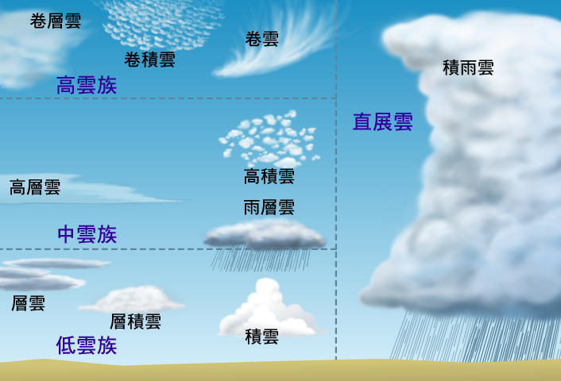

雨是一種自然降水現象。大氣層中的水蒸氣凝結成小水珠，大量的小水珠形成了雲。當雲中的水珠達到一定質量以後就會下落至地表，這就是降雨。雨是地球水循環不可缺少的一部分，是大部分生態系統的水分來源，是幾乎所有的遠離河流的陸生植物補給淡水的唯一方法。雨滴也有可能在還未到達地面時就完全蒸發，有些形況就是在當雨通過森林的林木時，雨常會被森林截流，而直接蒸發入大氣中，這種情形可以減少雨對於地表的侵蝕。在有些地表炎熱的地區（如沙漠地區）水分直接蒸發尤為常見。這樣的降雨被稱為幡狀雲。
一、地形雨:潮溼氣流受到山地阻擋，被迫沿迎風坡上升，溫度降低，空氣中的水汽凝結而降水，稱為地形雨。氣流越過山頂，沿背風坡向下流動，則形成增溫、乾燥等現象，有些地方還出現乾熱的焚風。
二、對流雨:對流雨盛行於熱帶及溫帶夏季午後，因高溫使得蒸發旺盛，富含水汽的氣流劇烈上升，至高空因減壓膨脹，而冷卻成雲致雨，稱為對流雨。其特點為：強度大、雨時短、雨區小、常伴有雷電、短暫強風，又稱為熱雷雨、雷雨或雷陣雨。如台灣夏季午後的西北雨即是。
三、鋒面雨:冷暖性質不同的氣團相遇，其接觸面稱為鋒面。暖溼空氣因密度小，較乾冷空氣輕，會沿著鋒面爬升，而致水汽凝結降雨，稱為鋒面雨，如臺灣5、6月間的梅雨。鋒面雨多發生於溫帶氣旋的天氣系統內，故又稱氣旋雨。
四、颱風雨:在熱帶洋面出現的熱帶氣旋，其降雨主要是由海上潮溼空氣的強烈輻合上升作用而形成，稱為颱風雨。熱帶氣旋的範圍較溫帶氣旋小，但雲層濃密，且環繞在低氣壓中心的氣流強盛，帶來狂風暴雨，經常造成災害。熱帶氣旋在東亞地區稱為颱風，在美洲地區則稱為颶風。
